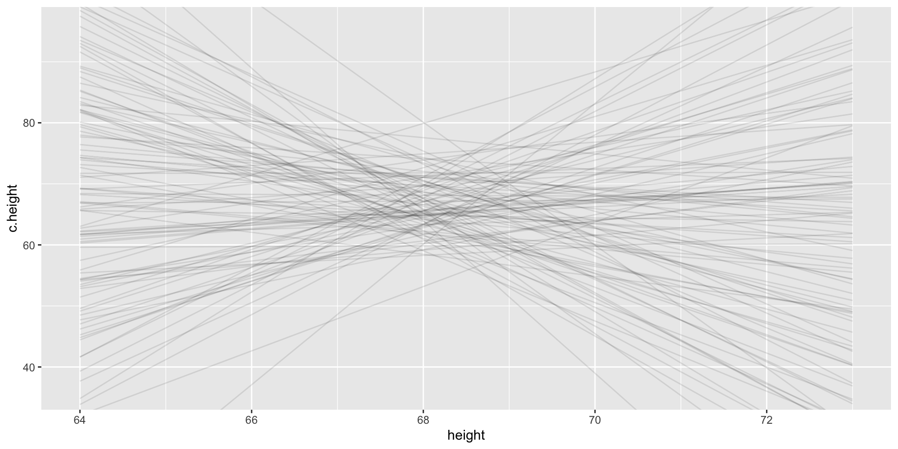
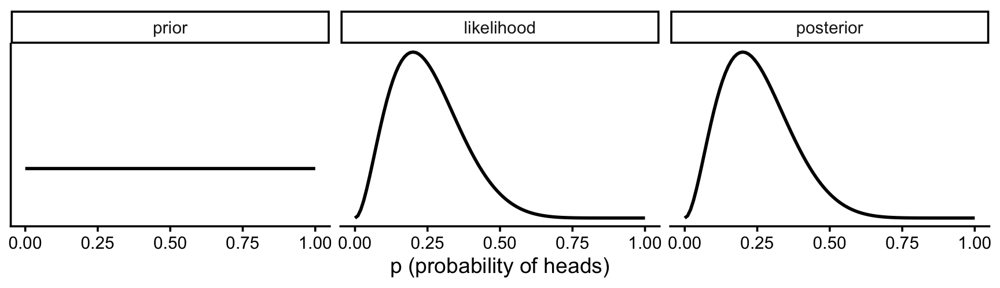
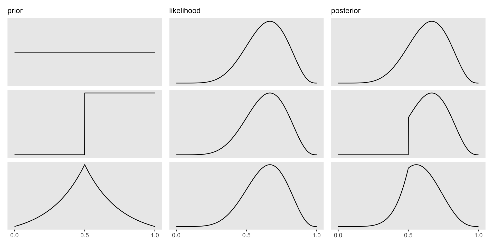
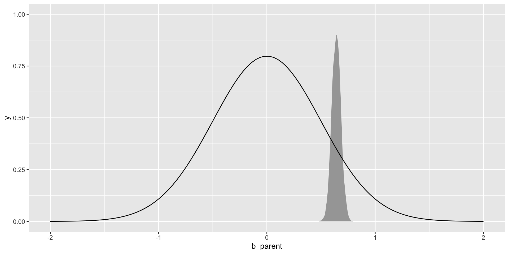

The old way does not scale well for more advanced models, nor is it especially clear
\[ y_i \sim Normal( \mu_i , \sigma )\ \]
\[\mu_i = \beta_0 + \beta_1 X_i \]
GLM
Helpful because it 1) explicitly describes the likelihood distribution 2) the parameters we are trying to model and 3) any link functions we need to use
\[ y_{i} \sim \operatorname{Bernoulli}(p_i) \]
\[\text{logit}(p_i) = \beta_0 + \beta_1 X_i \]
A working mental model
What are Bayesian models?
“Standard” regression with a different estimation algorithm.
Results that represent a distribution rather than a point estimate and some uncertainty.
Priors that incorporate existing knowledge.
1. A different estimation algorithm
OLS i.e. \(min\sum(Y_{i}-\hat{Y})^{2}\)
R uses QR decomposition, Newton Raphson, Fisher Scoring, SVR, etc – not this equation.
More advanced stats use an even different algorithm (e.g., maximum likelihood)
So why use bayesian algo? Always works. Fewer assumptions. Lots o’ tricks: Regularization in model, imputation in model, etc.
2. Think of results in terms of distributions
Results are typically thought of as an estimate and an SE
Indicates a “best guess” ie mean/median/mode and the imprecision related to it
If this guess is far away from zero (and imprecision not large), then it is “significant”
We know that if we repeated this again we won’t get the same answer (estimate), but likely in between our CIs
library(brms)fit.1.bayesian <-brm(child ~ parent, data = galton.data,prior =c(prior(normal(66, 5), class = Intercept), # brms puts this on the intercept at the mean parent heightprior(normal(0, .5), class = b),prior(exponential(.5), class = sigma)),backend ="cmdstanr",file ="fit.1.c")
summary(fit.1.bayesian)
Family: gaussian
Links: mu = identity
Formula: child ~ parent
Data: galton.data (Number of observations: 928)
Draws: 4 chains, each with iter = 2000; warmup = 1000; thin = 1;
total post-warmup draws = 4000
Regression Coefficients:
Estimate Est.Error l-95% CI u-95% CI Rhat Bulk_ESS Tail_ESS
Intercept 24.28 2.84 18.58 29.75 1.00 4564 2966
parent 0.64 0.04 0.56 0.72 1.00 4567 3066
Further Distributional Parameters:
Estimate Est.Error l-95% CI u-95% CI Rhat Bulk_ESS Tail_ESS
sigma 2.24 0.05 2.14 2.34 1.00 4802 3105
Draws were sampled using sample(hmc). For each parameter, Bulk_ESS
and Tail_ESS are effective sample size measures, and Rhat is the potential
scale reduction factor on split chains (at convergence, Rhat = 1).
Is made up of a series of educated guesses (via our algorithm), each of which is consistent with the data.
Greater density, greater plausibility of that parameter value.
Unlike CI which every value is equally plausible until it is implausible because it is out of the CI. Not just a best guess and an SE around the best guess (as with Maximum Likelihood).
In standard practice we can assume this distribution (typically normal), but with bayes it can be flexible!
Posterior distribution (ie results)
Is made up of a series of educated guesses. Each dot represents a particular guess. Guesses that occur more often are considered more likely.
brms handed us a whole distribution for each parameter. To see where it comes from, we’ll build it up from something you already know:
Likelihood: how well does each possible parameter value explain the data? (next)
Maximum likelihood: pick the single best-scoring value. This is what lm(), glm(), lmer() and SEM software do
What maximum likelihood throws away, and why that matters for thinking in distributions (end of this section)
Priors: the missing piece that turns likelihoods into a distribution of plausible values (point 3)
MCMC: the algorithm that does all of this when the model is too big to do by hand (end of point 3, and lecture 5)
What do you mean by likely?
Three parameters in a binomial distribution (# successes, # of trials, probability of success).
Often you would fix #trials and probability of success to see what # successes are most/least likely.
Code
data.frame(heads =0:10, prob =dbinom(x =0:10, size =10, prob = .2)) %>%ggplot(aes(x =factor(heads), y = prob)) +geom_col(fill ="#562457") +geom_text(aes(label =round(prob, 2), y = prob + .01),position =position_dodge(.9),size =5, vjust =0) +labs(title ="Binomial Distribution of Coin Flips",subtitle ="n = 10, p = .2",x ="Number of Successes (Heads)",y ="Density") +theme_classic(base_size =16)
Likelihood is a function of the parameter
Note how this is in the form of: p(data | hypothesis)
“What is the probability of having x successes given a fixed probability of success?”
Good at rejecting some preconceived state of the world (is this coin fair), but not good at estimating p (what is the probability of heads for this coin?)
Most often we don’t know what p is
p is like the parameters we are trying to estimate in our science.
We do not know p, that is why we are running the experiment.
What we want is p(hypothesis | data).
Most often we don’t know what p is
We can look at what p is consistent with (or not) based on our data (2 successes in 10 trials) (Rather than assume some specific p).
Code
tibble(p =seq(0.01, 0.99, by =0.01)) %>%mutate(likelihood =dbinom(2, size =10, prob = p)) %>%ggplot(aes(x = p, y = likelihood)) +geom_line()
Probability vs. likelihood
“Probability attaches to possible results; likelihood attaches to hypotheses”
The first graph assumed p = .2. Probabilities are about a fixed distribution. p( data | distribution ) or p(heads | p = .2).
Likelihood is about hypotheses with fixed data. L(\(\theta\)|data) = P(data|\(\theta\)) across many theta/hypotheses. We entertained many hypotheses (p), which is why we looped it.
Maximum likelihood: pick the best score
The likelihood curve scores every possible value of p by how consistent it is with the data
Maximum likelihood reports the value with the highest score (the peak) as the estimate, plus a standard error for how sharp the peak is
This is how most of the models you’ve run were estimated: logistic regression, multilevel models, SEM
Next: do it ourselves, by brute force, so you can see exactly what the software does
Grid approximation: try every value
Maximum likelihood, done by brute force:
Make a grid of possible values for the parameter (e.g., p = 0, .01, .02, …, 1)
Likelihood: for each grid value, how likely are our data if that value were true? (dbinom(), dnorm(), …)
Find the peak: the grid value with the highest likelihood is the maximum likelihood estimate (MLE)
The computer is doing the counting for us: every possible value gets a score for how consistent it is with the data.
The grid, step by step
Our coin again: 2 heads in 10 flips. What is p?
coin_grid <-tibble(p =seq(from =0, to =1, length.out =101)) %>%# 1. possible values of pmutate(likelihood =dbinom(2, size =10, prob = p)) # 2. likelihood of our datacoin_grid %>%slice(c(1, 11, 21, 31, 51, 81, 101))
coin_grid %>%slice_max(likelihood) # 3. the peak = MLE
# A tibble: 1 × 2
p likelihood
<dbl> <dbl>
1 0.2 0.302
The likelihood across the grid
Code
ggplot(coin_grid, aes(x = p, y = likelihood)) +geom_line(linewidth =1) +geom_vline(xintercept = .2, linetype ="dashed") +annotate("text", x = .22, y =max(coin_grid$likelihood), label ="MLE = .2", hjust =0) +labs(x ="possible values of p (probability of heads)", y ="likelihood of 2 heads in 10") +theme_classic(base_size =14)
Maximum likelihood reports the peak, .2. But look at the whole curve: .1 or .4 are not much less consistent with the data. Keep that in mind; the whole curve is where Bayes comes in.
More points = a better approximation. With 5 points the best we can say is “about .25”; with 100 the peak lands on .2.
The likelihood of a whole dataset
With real data each observation gets its own likelihood: for a normal model, the height of the normal curve at that observation, dnorm(y, mean = μ, sd = σ). If observations are independent, the likelihood of the whole dataset is the product:
A set of parameter values fits well when its curve is high where the data are. μ = 66 puts many children out in its tail, where the curve is low, so its log-likelihood is much lower. Maximum likelihood looks for the values with the highest one.
Why log?
Each likelihood is a small number (0.007 to 0.16 here). Multiply 928 of them:
prod(dnorm(galton.data$child, mean =68, sd =2.5))
[1] 0
Exactly 0? The true value is about \(10^{-944}\), far smaller than the smallest number a computer can store (about \(10^{-308}\)). So we take logs:
Products become sums, and adding numbers like −2 or −5 never underflows
Same peak: log is always increasing, so the parameter value with the highest likelihood also has the highest log-likelihood
Log-likelihoods are negative (logs of numbers below 1). Closer to 0 = better fit
dnorm(..., log = TRUE) returns the log directly (more accurate than log(dnorm(...)))
The log-likelihood of one set of values
For one (μ, σ) pair: compute each child’s log density, then add them up.
galton.data %>%mutate(log_lik =dnorm(child, mean =68, sd =2.5, log =TRUE)) %>%select(child, log_lik) %>%slice(c(1, 200, 400, 600, 800)) # the same five children
sum(dnorm(galton.data$child, mean =68, sd =2.5, log =TRUE))
[1] -2173.85
That one number is the score for μ = 68, σ = 2.5. A grid approximation computes it for every grid value and looks for the highest.
Two parameters: Galton’s heights
The average child height μ and the SD σ. Now the grid is every combination of μ and σ:
height_grid <-crossing(mu =seq(from =67.6, to =68.6, length.out =150),sigma =seq(from =2.3, to =2.8, length.out =150))nrow(height_grid)
[1] 22500
For each combination, the log-likelihood of all 928 children’s heights:
height_grid <- height_grid %>%mutate(log_lik =map2_dbl(mu, sigma, \(m, s) sum(dnorm(galton.data$child, mean = m, sd = s, log =TRUE))))height_grid %>%slice_max(log_lik) # the MLE
# A tibble: 1 × 3
mu sigma log_lik
<dbl> <dbl> <dbl>
1 68.1 2.52 -2173.
22,500 combinations × 928 children ≈ 21 million log densities, added up within each combination.
The log-likelihood surface
Code
library(patchwork)surface <-ggplot(height_grid, aes(x = mu, y = sigma, fill = log_lik)) +geom_raster(interpolate =TRUE) +scale_fill_viridis_c(option ="C", guide ="none") +labs(x =expression(mu), y =expression(sigma)) +theme_classic(base_size =14)profile_mu <- height_grid %>%group_by(mu) %>%summarise(log_lik =max(log_lik)) %>%ggplot(aes(x = mu, y = log_lik)) +geom_line(linewidth =1) +labs(x =expression(mu), y ="log-likelihood", subtitle ="best log-likelihood for each μ") +theme_classic(base_size =14)surface | profile_mu
The peak sits at the sample mean (68.09) and SD (2.52): for a normal model, those are the maximum likelihood estimates. We’ll come back to this grid once we have priors.
Maximum likelihood keeps one value
What maximum likelihood gives you: the peak (68.09) and a standard error. The uncertainty is about imaginary repeated samples: “if we redid the study many times, estimates would vary this much.” It is not a statement about which values of μ are plausible for our data.
So why not just use the whole likelihood curve as our distribution of plausible values? Because it isn’t one:
It answers “how likely are the data, if μ were this?”, not “how plausible is this μ, given the data?”
It doesn’t add up to 1 across the possible values, so it can’t be read as probabilities
It has no way to use what we already knew before collecting the data
From likelihood to a distribution
To turn “how well does each value explain the data” into “how plausible is each value,” Bayes’ theorem says we need one more ingredient:
Priors insert knowledge you have outside of your data into your model
This can seem “subjective” as opposed to the more “objective” way of letting the data speak.
We will mostly not “tip the scales” towards an outcome we want.
Most of the time the prior knowledge constrains plausible or implausible range of values e.g. we know an effect size of a million is very unlikely.
Often priors don’t matter…
A model with priors
\[ child_i \sim Normal( \mu_i , \sigma )\ \]
\[\mu_i = \beta_0 + \beta_1 parent_i \]
We need to put priors on each parameter we want to estimate, here \(b_{0}\) & \(b_{1}\) (and e).
\(b_{0}\) is the intercept and reflects average child height when parent height is centered.
We know, roughly, what average height of adults are so we can create a distribution, say ~N(66 (5.5 ft), 5). That means we are pretty sure (95%) the average height is between ~4’8 and 6`4
Prior draws
Code
p.0<-tibble(x =seq(from =40, to =100, by = .1)) %>%ggplot(aes(x = x, y =dnorm(x, mean =66, sd =5))) +geom_line() +scale_x_continuous(breaks =seq(from =40, to =100, by =10)) +labs(title ="mu ~ dnorm(66, 5)",y ="density")p.0
What prior for the slope?
We could argue that the \(b_{1}\) parameter (which indexes the strength of association between parent and child height) is positive. But we don’t want to stack the deck.
Let’s center it around zero, saying that the most plausible estimate is no association, but that we are willing to entertain some strong effects in either direction.
In sum: we tend not to make guesses on the average parameter estimate, but instead constraints on the range of possible values. Constraints tell us how “surprised” we’d be if we get some estimate
It means, BEFORE WE SEE THE DATA we are comfortable with different regression lines. For N(0,5) this is what we would expect:
Code
pp <-tibble(n =1:100,a =rnorm(100, mean =66, sd =5),b =rnorm(100, mean =0, sd =5)) %>%expand(nesting(n, a, b), height =range(galton.data$parent)) %>%mutate(c.height = a + b * (height -mean(galton.data$parent))) g.pp <- pp %>%ggplot(aes(x = height, y = c.height, group = n)) +geom_line(alpha =1/10) +coord_cartesian(ylim =c(36, 96)) g.pp

Okay so why is this important?
Those N(0, 5) lines say a 1-inch taller parent could mean a child 10+ inches taller (or shorter). That’s absurd, so we’ll use N(0, 0.5) instead: still centered on “no association,” but only entertaining plausible slopes.
Why priors matter
A model that makes impossible predictions prior to seeing the data isn’t too useful. Why waste the effort? We often know what values are likely, given what we know about effect sizes
We entertain impossible values with standard “frequentist” methods. They have implicit priors such that all values, from negative infinity to positive infinity are equally likely.
If we use flat (uniform) priors we get essentially the same results as a frequentist method: the posterior mode equals the maximum likelihood estimate, and the intervals are usually very close (though we interpret them differently).
p(data| \(\theta\) ) is the likelihood (really no different than ML).
p(data) can be ignored for most purposes: it’s a normalizing constant (the same for every value of θ), which is why we can work with the right-hand side
Tying it together
p(data | \(\theta\)) is what we typically work with. What is the definition of a p-value?
We (scientists and those wanting to make decisions based on the science) don’t want that, but rather they want p(\(\theta\) | data). Inverse probability - working backwards from the data to determine the most likely underlying condition
Bayes gives us this.
Back to the grid: add a prior
The maximum likelihood grid needs only two more steps to become Bayes:
Make a grid of possible parameter values
Likelihood of the data for each grid value
Prior: how plausible is each value before seeing the data?
Multiply prior × likelihood
Normalize: divide by the sum so the posterior adds up to 1
coin_grid %>%mutate(prior = prior /sum(prior), likelihood = likelihood /sum(likelihood)) %>%# put all three on one scalepivot_longer(c(prior, likelihood, posterior)) %>%mutate(name =factor(name, levels =c("prior", "likelihood", "posterior"))) %>%ggplot(aes(x = p, y = value)) +geom_line(linewidth =1) +facet_wrap(~name, nrow =1) +scale_y_continuous(NULL, breaks =NULL) +labs(x ="p (probability of heads)") +theme_classic(base_size =14)

With a flat prior the posterior has the likelihood’s shape: the data alone decide. Same peak as maximum likelihood (.2), but now we keep the whole curve as the answer.
Change the prior, change the posterior
A prior that says “probably a fair-ish coin”: Beta(5, 5), centered on .5.
The posterior is a compromise: the data pull toward .2, the prior pulls toward .5. With only 10 flips the prior has real influence; with 1,000 flips it would barely matter.
From a grid to a pile of guesses
Sample grid values in proportion to their posterior probability, and you get draws, just like brms gives you:
Every summary we use (means, intervals, probabilities) is just counting these guesses.
Galton’s heights, with priors
Same grid as before, plus the priors from our brms model: μ ~ Normal(66, 5), σ ~ Exponential(.5). On the log scale, multiplying becomes adding:
height_grid <- height_grid %>%# the log-likelihood grid from earliermutate(log_prior =dnorm(mu, 66, 5, log =TRUE) +dexp(sigma, rate = .5, log =TRUE),posterior =exp(log_lik + log_prior -max(log_lik + log_prior)), # back from logs, safelyposterior = posterior /sum(posterior))
The joint posterior of μ and σ
Code
joint <-ggplot(height_grid, aes(x = mu, y = sigma, fill = posterior)) +geom_raster(interpolate =TRUE) +scale_fill_viridis_c(option ="C", guide ="none") +labs(x =expression(mu), y =expression(sigma)) +theme_classic(base_size =14)marg_mu <- height_grid %>%group_by(mu) %>%summarise(posterior =sum(posterior)) %>%ggplot(aes(x = mu, y = posterior)) +geom_line(linewidth =1) +scale_y_continuous(NULL, breaks =NULL) +labs(x =expression(mu), subtitle ="posterior for μ (summed over σ)") +theme_classic(base_size =14)joint | marg_mu
Centered near 68.09 inches with a 95% interval only about ±0.16 inches wide. With 928 children, these weak priors barely move anything: the posterior looks just like the likelihood surface.
A typical multilevel model with 50 parameters: 100⁵⁰. More grid points than atoms in the universe
Grids are perfect for building intuition and for one or two parameters. For anything bigger we need an algorithm that spends its time where the posterior actually is, which is what MCMC does (lecture 5). What comes out is the same thing: a pile of guesses, more of them where the posterior is higher.
How MCMC explores
Markov chain Monte Carlo (MCMC) wanders through parameter values, proposing a new value, keeping it more often if prior × likelihood is higher there. The ones that are more likely will appear more often.
What do I mean “appear” more often? It lands near the peak most often (just as .2 was the best value for the coin) but also visits less likely values, in proportion to their posterior probability. Its draws are the pile of guesses we sampled from the grid, without ever building the grid.
Invented for the first computers (and the hydrogen bomb) in 1953, but published in a physics journal; statisticians mostly ignored it until desktop computers got fast enough around 1990.
Bayesian analysis counts all ways that something can happen (according to assumptions/model). Assumptions with more ways that are consistent with data are more plausible.
This is the same scoring that maximum likelihood does (try out values, see which are most consistent with the data). Maximum likelihood then reports one winner.
Where Bayes differs, is that there is no ONE result, that there are many possible results that are consistent with the data
Combining the three components
Priors influencing Posterior

sample size influence
Today’s posterior is tomorrow’s prior
Collect data in waves: the posterior after wave 1 becomes the prior for wave 2. You end up exactly where you’d be with all the data at once.
fit.1.bayesian %>%spread_draws(b_Intercept, b_parent) %>%ggplot(aes(x = b_parent)) +stat_slab() +stat_function(data =data.frame(x =c(-2, 2)), aes(x), fun = dnorm, n =100, args =list(0, .5))

Going from prior to posterior
plausible lines prior to data –> plausible lines after data
What is confusing:
Is it a philosophically different framework? p( \({H_0}\) | D) vs p(D | \({H_0}\) ) but it doesn’t really matter. Bayesian just means using the algorithm, and again, most of us don’t have strong algo preferences. Assuming a flat prior basically makes p( \({H_0}\) |d) = p( D | \({H_0}\) ) so if you want (don’t tell Bayesians) you can interpret frequentist stats as Bayesian. And that means CIs too! (don’t tell frequentists)
Why don’t we do this already? Isn’t frequentist better? History doesn’t progress due to fair and even fights (i.e. the correct doesn’t always prevail). Computation limitations and Fisher held progress back.
What is confusing:
Technically, we don’t have p-values, but Bayesian has analogues.
Technically, there isn’t NHST (because no null distribution to create sampling distribution) but you can easily do “it”. Remember how model comparisons are equivalent to typical NHST tests?
Bayes Factors. Mostly garbage (imho) as they can be easily manipulated. But they have their place. BFs =/= Bayesian.